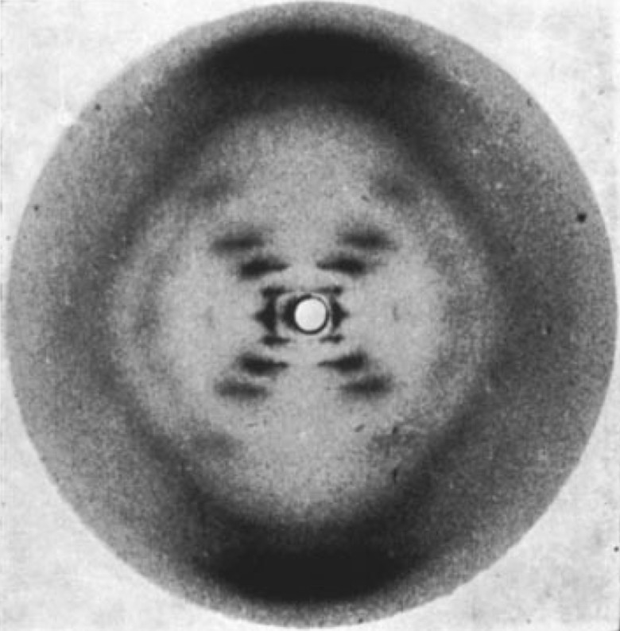

Rosalind Franklin nació en Londres en el año 1920.Tras completar sus estudios se unio a la Asocicion del Estudio del Carbón
Después se traslada a París donde estudia los rayos x. Junto con Maurice Wilkins consiguio una imagen de una tira de Adn
Sin embargo, Wilkins robó las pruebas y se las dió a Watson y Crick, confirmando su teoría del Adn.
Los tres obtuvieron el premio Nobel,aunque Watson dijo en multiples ocasiones que Franklin también merecía ganarlo. Pero segun la normativa de los premios no se podía premiar a gente ya fallecida.
Realizó varios descubrimientos importantes a lo largo de su carrera.
Descubrió la técnica de la Difracción de Rayos X
Con la anterior técnica, realizó la primera fotografía del ADN
He elegido a Roslaind Fraklin porque me pareció curiosa la historia del descubrimiento del ADN y su participación en él. Se nos contó esto en clase y desde entonces, me intereso esta infravalorada científica
Inicio